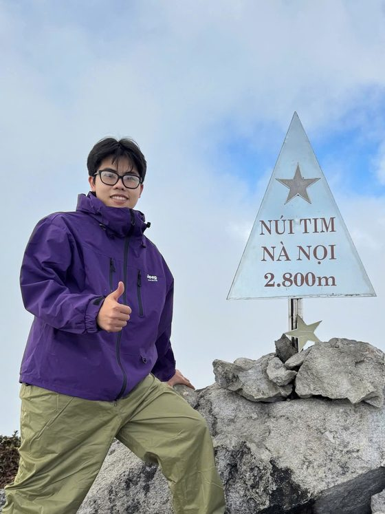
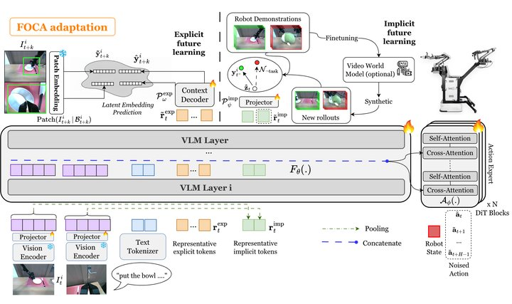
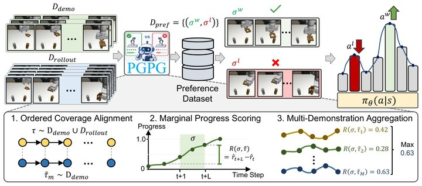
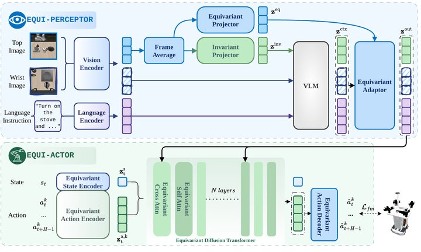
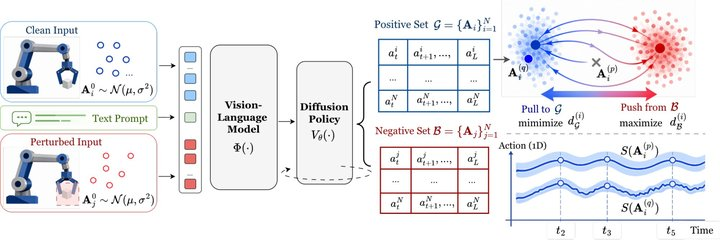
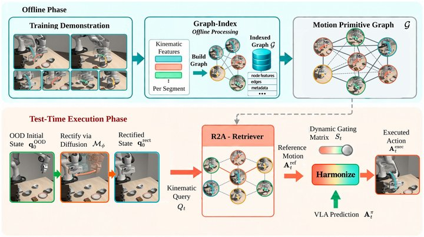

Duc Minh Nguyen (Nguyễn Minh Đức)
I am a Robotics Researcher in the AI Residency Program at VinRobotics, supervised by Dr. Duy Minh Ho Nguyen. My goal is generalist robots that reliably complete diverse tasks in unseen real-world environments; currently, I work on zero-shot sim-to-real transfer for robot manipulation. Previously, I worked on data-efficient and robust Vision-Language-Action (VLA) policies at the Center for AI Research, VinUniversity, and graduated in Artificial Intelligence from FPT University as valedictorian of the Engineering cohort.
Research Interests
Physical AI: generalist robots that reliably complete diverse tasks in unseen real-world environments, overcoming the generalization bottleneck of today's robot policies.
Keywords: Embodied AI, Robot Manipulation, Vision-Language-Action (VLA) Models, World Models, Reinforcement Learning, Imitation Learning, Diffusion & Flow-Matching Policies, Sim-to-Real Transfer, Digital Twins
News
- Oct 2026Retrieve to Act is on arXiv.
- Sep 2026PGPG accepted to CoRL 2026; two papers submitted to ICLR 2027.
- Aug 2026Joined the AI Residency Program at VinRobotics as a Robotics Researcher.
- May 2026FOCA (first author) accepted to ICML 2026.
- Apr 2026Graduated from FPT University as valedictorian of the Engineering cohort.
Publications
* equal contribution, † equal advising





ReL-WM: Grounding World Model in Progress-Aware Scene Graphs
Under review at ICLR 2027
Skills
- Robot learning: VLA models, sim-to-real & digital twins, reinforcement & imitation learning, diffusion / flow-matching policies, world models
- Embodied robots (hands-on): Mobile ALOHA, SO-101, humanoid robots
- Robotics tools & benchmarks: ROS 2; LIBERO, RoboCasa, SIMPLER
- ML & infrastructure: PyTorch, JAX, OpenCV, ONNX; multi-GPU training on HPC clusters, Docker, Weights & Biases, ClearML
- Languages: Vietnamese (native), English (IELTS 8.0)
Online Courses
- Stanford CS224R: Deep Reinforcement LearningChelsea Finn
- Stanford AA274A: Principles of Robot Autonomy IMac Schwager
- Stanford CS237B: Principles of Robot Autonomy IIJeannette Bohg, Marco Pavone, Dorsa Sadigh
- Stanford AA203: Optimal and Learning-Based ControlMarco Pavone, Daniele Gammelli
- MIT 6.S184: Introduction to Flow Matching and Diffusion ModelsPeter Holderrieth, Ezra Erives
Contact
Email: ducido.w@gmail.com · Hanoi, Vietnam